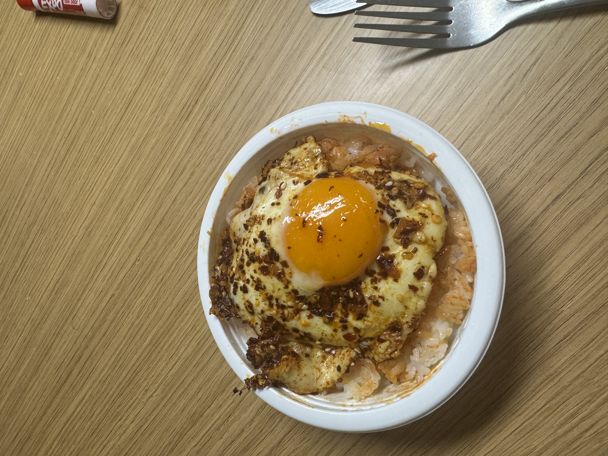

its just the
Chili Eggs but over
microwaveable rice. Also very yummy but I cant help but feel
like It's missing something... some sort of sauce for the
rice before the eggs go on or maybe some type of vegetable.